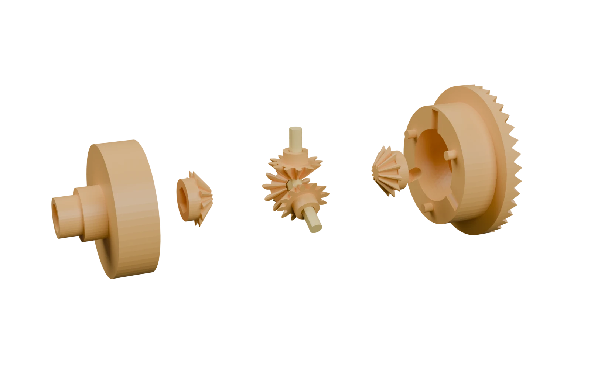

Gears, printed in PETG at 0.12 mm layers
A differential you print
One JGA25-370 encoder motor drives both rear wheels through a printed crown gear and a bevel differential, so the inside wheel can slow down in a turn. The crown teeth are generated by rolling the pinion through the blank, and every tooth is sized for at least twice the torque the tyres can grip.
Each build also slides every gear into place in software, to prove the diff can actually be put together.